Exercise 3 — Business Object Events: Real-time SAP Notifications
Exercises 1 and 2 were request-driven: your process asked, SAP answered. This exercise inverts the relationship — SAP tells you, the instant something changes. You'll subscribe to the Sales Order CHANGED event, route it through a Topic, and receive it in real time in a Boomi listener process. No polling, no schedules, no "check every five minutes."
The Exercise 2 query pulled 100 orders whether or not anything changed. An event fires once, for the one order that changed, at the moment it changed — the pattern behind live inventory counts on a storefront, instant order-status updates in a CRM, and data warehouses that stay current without batch windows. And because the payload can be enriched by the Table Service you built in Exercise 2, the notification arrives carrying full joined data, not just an order number.
Flow
- Section 1 (Steps 1–2) — subscribe to the Sales Order CHANGED event in the Boomi for SAP UI and route it to a Topic
- Section 2 (Steps 3–4) — build and deploy a Boomi Web Services Server listener
- Section 3 (Step 5) — trigger the event in SAP and watch it arrive
- How SAP Business Object events work — and what it takes to expose one
- What Topics are and why listeners subscribe to them
- The difference between event metadata and a full, table-service-enriched payload
- How to deploy a listener and verify real-time delivery end-to-end
Create a Business Object Event Subscription
SAP business objects (like BUS2032, the Sales Order) define events — CREATED, CHANGED, COMPLETED — but an event only fires if an event handler is linked on the SAP side. In the Boomi for SAP UI, exposed events show a lightning-bolt icon; events without it exist in the catalog but won't trigger anything yet.
Wiring that linkage is one-time SAP Basis configuration (event linkage activation and, for master-data changes, change-pointer settings via transactions like BD50). Our workshop system is already configured — but on a customer project, "why isn't my event firing?" is almost always this. The Boomi for SAP docs cover the full event-configuration procedure.
-
1
Log in to the Boomi for SAP UI.
-
2
In the Create menu, click Event → Business Object Event.

Create → Event → Business Object Event -
3
Search for the Business Object BUS2032 (Sales Order) and drag it onto the canvas. Notice the lightning-bolt icons on its event nodes — that's the exposure marker from the why-box above.
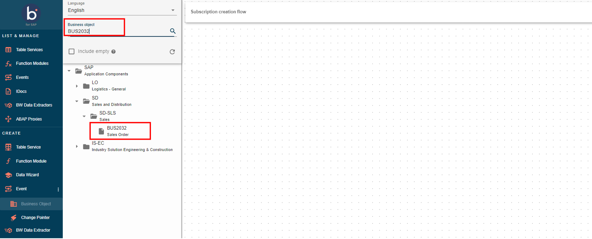
Add BUS2032 (Sales Order) to the canvas -
4
Select the frequency radio button Realtime and the event type CHANGED. Click Continue.
You could equally pick CREATED (fire on new orders) — the pattern is identical. Realtime means the event pushes the moment SAP commits the change; the alternative is a scheduled batch of accumulated events.
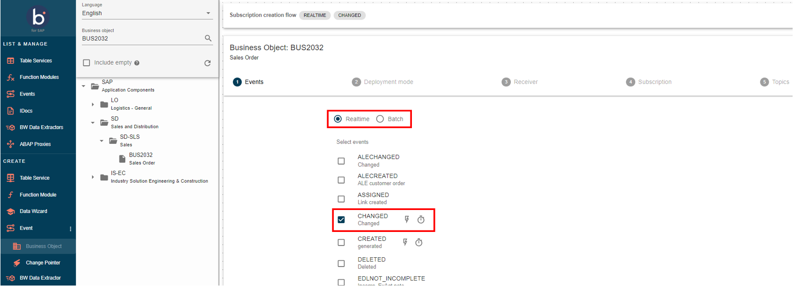
Select Realtime + CHANGED -
5
Set Deployment Mode to Local and click Continue.
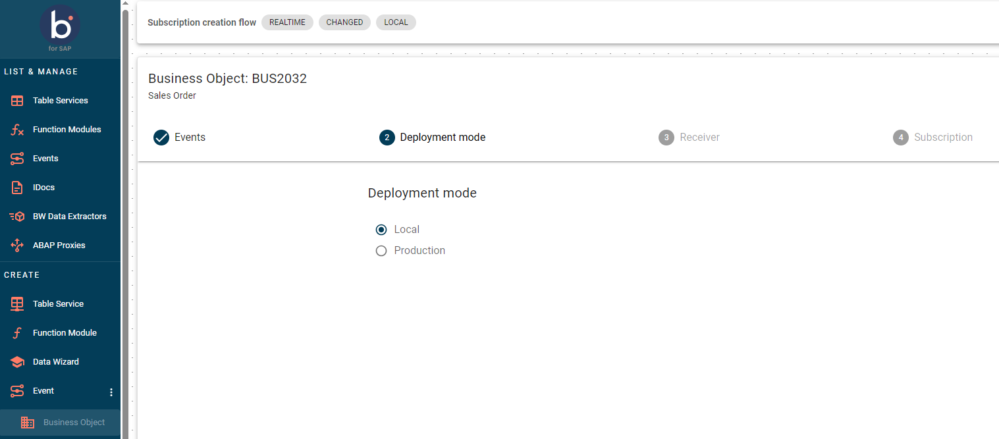
Set Deployment Mode to Local -
6
Select the receiver BOOMI SC TRAINING and click Continue.
What the receiver isThe receiver is where the event gets delivered — a registered Boomi endpoint. Several receivers exist on this Core (other demos, other environments); picking the wrong one sends your events somewhere you'll never see them. BOOMI SC TRAINING points at the training environment where you'll deploy your listener in Step 4.

Select the BOOMI SC TRAINING receiver
Configure the Subscription, Topic & Payload
A Topic is the named channel the event publishes onto. Your listener process subscribes to that channel by path — which is why the Topic ID here and the listener's Object name in Step 3 have to line up. One topic can fan out to many subscribers.
Just as important is how much data rides on the event. Three levels:
Event metadata only
"Something changed"You get the business object key — sales order 123 changed — and nothing else. Every downstream consumer must call back into SAP for details.
Full object payload
"Here's the header"The event carries the changed object's data — header-level fields for the order. Better, but still no line items.
Table-service enriched
This lab · the Boomi for SAP differenceThe event key is matched against a Table Service — your SALES_ORDERS_XX join from Exercise 2 — so the notification arrives with header and line items for exactly the one order that changed.
-
1
In the Subscription ID field, enter a unique identifier using your initials (e.g.,
SALESCHANGE_XX).
Enter the Subscription ID -
2
Click Create New Topic and set:
Field Value Deployment Mode LocalTopic ID SALESEXERCISE_XX(replace XX with your initials)
Create a new Topic -
3
Once the topic is created, click Create Subscription to finalize.
Note your IDs — the listener's Object name in Step 3 must correspond to this subscription (e.g.,Saleschangexx). Behind the scenes, the enrichment works by matching the event's key — the changed order'sVBELN— against the key field of your table service, so only that one order's joined rows are pulled.
Build the Boomi Listener Process
Something has to be standing at the other end of the topic when the event arrives. A Web Services Server listener is a process whose start shape waits for inbound calls instead of running on demand. The Object name becomes part of its URL path — that's the contract with your subscription. And the Request Profile is your SALES_ORDERS_XX Query Response from Exercise 2, because that's exactly the shape of the enriched payload the event will deliver. In a real build, everything downstream of this start shape — alerts, warehouse updates, CRM sync — is just normal Boomi process design; here we simply return the document so you can inspect it.
-
1
In the Boomi platform, navigate to your USERXX folder and create a new process via New Component → Process.

New Component menu 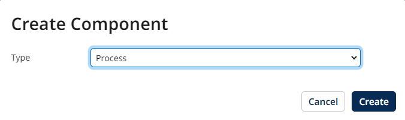
Select the Process type -
2
Configure the Start shape: set type to Connector, select the Web Services Server connector, and set Action to Listen.
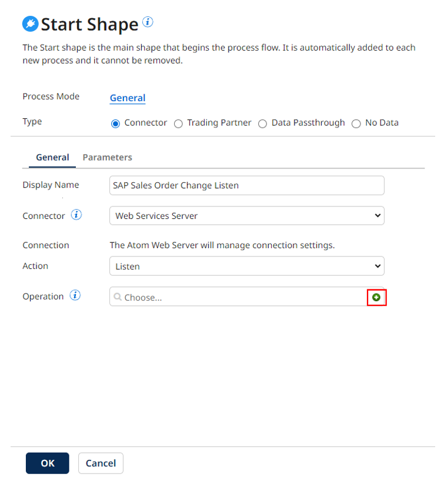
Start shape — Web Services Server, Listen -
3
Configure the connector operation with these values:
Field Value Operation Type EXECUTEObject Saleschangexx(replace xx with your initials — this becomes the URL path the event calls)Expected Input Type Single JSON ObjectRequest Profile Boomi for SAP connector SALES_ORDERS_XX Query ResponseResponse Output Type Single Data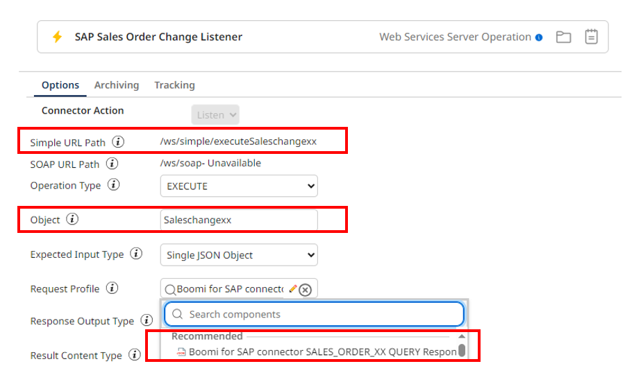
Web Services Server operation configuration -
4
Click Save and Close, then OK to return to the canvas.

Return to the canvas -
5
Add a Return Documents shape to the canvas and connect it to the Start shape. This simply echoes the received payload back as the response — the minimal listener, and exactly what you want for inspecting what arrives.
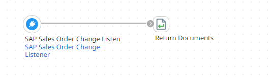
Add a Return Documents shape
Deploy the Listener
Test mode runs a process once, on demand, and stops. A listener has to be always on, waiting at its URL for whenever SAP fires — and only deployed processes run continuously on an Atom. Packaging and deploying is what turns your canvas into a live endpoint.
-
1
Save the process. Then click Create Packaged Component and deploy the process to the Boomi Training Dev environment.

Deploy to the Boomi Training Dev environment
Trigger the Event in SAP & Verify
Your trainer will make the first change live on the projector so everyone sees the full round trip: save in SAP → event fires → listener execution appears in Process Reporting within seconds. Then follow the steps below to trigger one yourself.
-
1
Log in to the SAP client where Boomi for SAP is installed.
-
2
Navigate to transaction VA02 (Change Sales Order) by typing
VA02in the transaction code box and pressing Enter.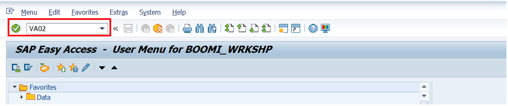
Enter the VA02 transaction code -
3
Enter a Sales Order number and press Enter to open it.
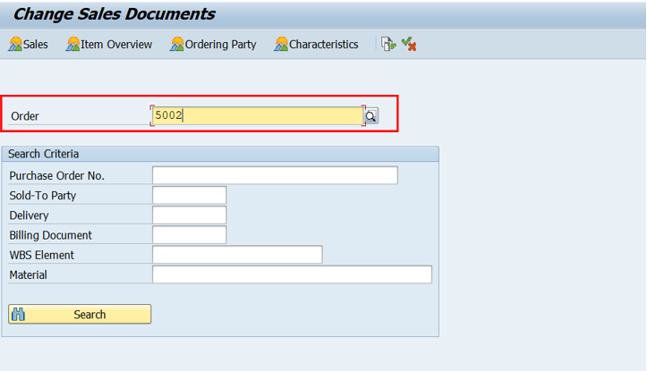
Open a Sales Order in VA02 -
4
Change a field value — for example, Payment Terms — and save the order with the Floppy Disk icon. The save is the commit, and the commit is what fires the CHANGED event.

Change a field and save -
5
Return to the Boomi platform and open Process Reporting — your listener's execution should appear within moments of the save.

The event execution in Process Reporting -
6
Click the timestamp of the event, then click the Web Services Server shape's Successes link.
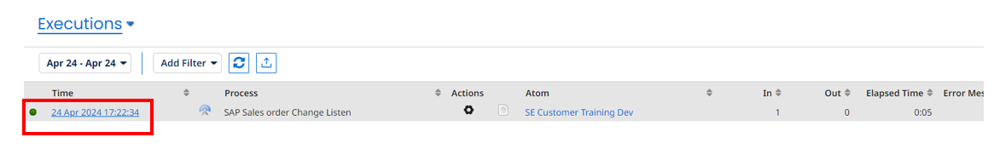
Click the event timestamp 
Click the Successes link -
7
Click the gear icon under Actions and select View Document to inspect the payload. Read it closely — this is the punchline of the exercise:
- It contains only the one order you changed — the event key filtered the table service to that single
VBELN. Compare that to Exercise 2's query, which pulled 100 rows. - It contains header and line-item fields — your Exercise 2 join, riding along on the event. Metadata-only would have given you little more than "order 123 changed."

View Document 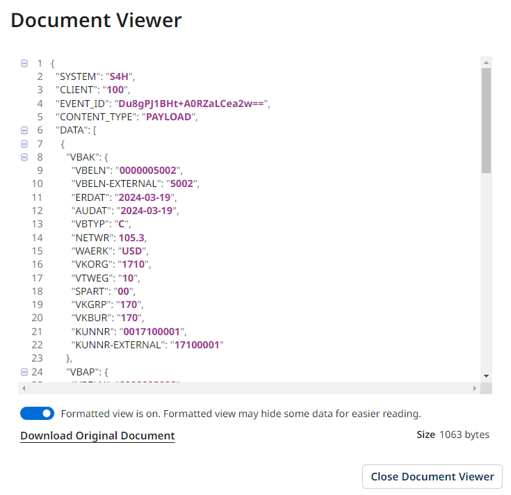
The enriched event payload — header + items for exactly the changed order Congratulations! You've built the full event pipeline: SAP change → exposed event → subscription and topic → deployed listener → enriched real-time payload. This is the pattern behind live inventory, instant order tracking, and event-driven data warehouses on SAP. - It contains only the one order you changed — the event key filtered the table service to that single